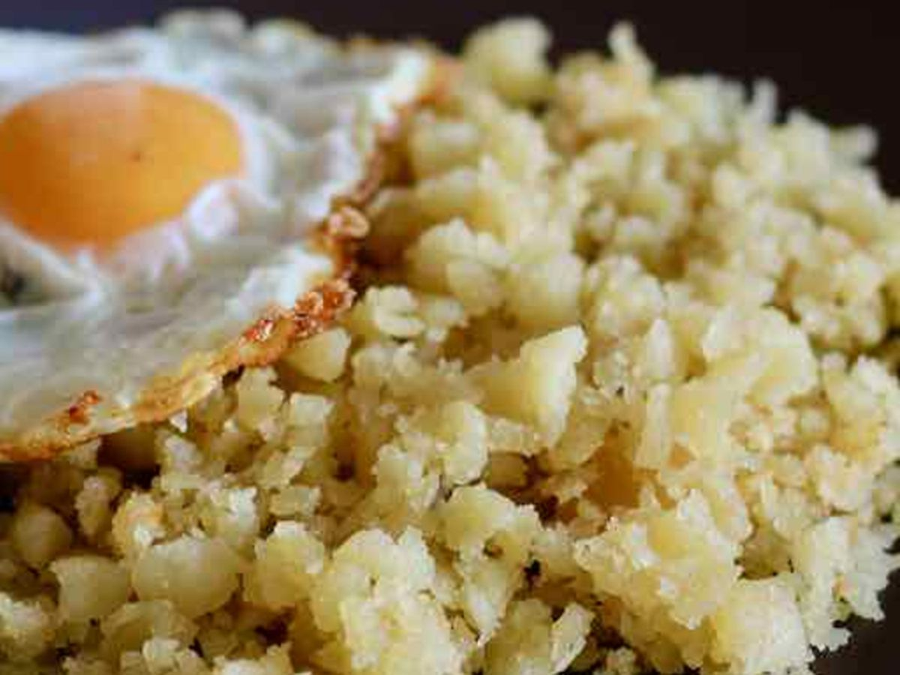

Reviro

Como hacer reviro misionero?
El reviro es un plato típico que se suele hacer en los días fríos y lluviosos.
Además es una de las comidas más versátiles ya que a este plato se le puede añadir huevo frito o hervido,
carne, salsa (verduras con carne), hasta hay quienes le agregan un poco de azúcar.
Y lo acompañamos con matecocido o mate.
Ingredientes:
- 1 kg harina 0000 o 000
- 1 cuchara sal fina
- 2 huevos
- 200 ml Agua aproximadamente
- 100/150 ml aceite de girasol
- Colocar la harina, la sal y el huevo en un recipiente grande y mezclar muy bien.
- Agregar el agua de a poco hasta que quede una masa consistente y «chiclosa» en caso de que nos pasemos, se puede poner un poco más de harina
- En una olla se debe colocar a calentar el aceite.
- Cuando la olla y el aceite estén bien calientes colocamos la masa.
- Dejamos que el fondo de la masa se dore un poco y luego se debe dar vuelta para que se dore por el otro lado.
- Con una cuchara de madera, dar pequeños golpes a la masa para que se vaya partiendo en pequeños trozos.
- Dejar cocinar estos trozos de masa a fuego bajo durante 10 minutos. Revolver de vez en cuando y retirar cuando ya estén ligeramente dorados.
Esta es la receta clásica de reviro, sin embargo cada experto tiene su propia receta,
algunos prefieren el reviro mas fino otros más grueso, algunos más tostados y otros no tanto.